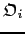
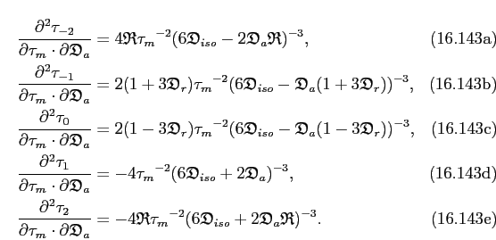

Next:
The weight Hessians of
Up:
Spheroidal diffusion tensor
Previous:
The weights of the
Contents
Index
Subsections

partial derivative
The weight gradients of the spheroid
partial derivative
The partial derivatives with respect to the orientational parameter
are

Next:
The weight Hessians of
Up:
Spheroidal diffusion tensor
Previous:
The weights of the
Contents
Index
Edward d'Auvergne 2011-01-10